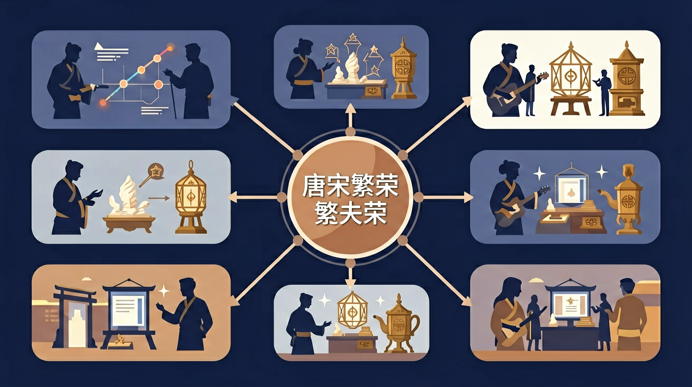

通过了解隋朝的兴亡、“贞观之治”与“开元盛世”，知道隋朝速亡和唐朝兴盛的原因；了解科举制度创建、大运河开通、文成公主入藏、鉴真东渡、玄奘西行等史事，从制度、经济、文学艺术、民族交往、中外文化交流等方面认识隋唐王朝在世界历史上的重要地位。

🎯 能说出唐朝对外开放与宋朝重文轻武的3个具体表现
🎯 能分析经济重心南移对唐宋社会变化的双重影响
🎯 能比较长安城与汴京在城市布局上的差异反映的时代特征
❓ 为什么唐朝能成为世界级帝国，宋朝却老被欺负？
❓ 课本说宋朝经济超发达，那普通老百姓真的过得比唐朝好吗？
❓ 唐诗宋词背了那么多，到底怎么用这些判断朝代特点？
学完这一课，这些问题你都能自信地回答。
下列哪项是唐朝独有的对外政策？
判断：'宋朝发明活字印刷后立刻取代了雕版印刷'
唐宋繁荣是初中历史的重要内容。通过了解隋朝的兴亡、“贞观之治”与“开元盛世”，知道隋朝速亡和唐朝兴盛的原因；了解科举制度创建、大运河开通、文成公主入藏、鉴真东渡、玄奘西行等史事，从制度、经济、文学艺术、民族交往、中外文化交流等方面认识隋唐王朝在世界历史上的重要地位。
认识北宋面临的新形势，了解辽、宋、西夏的并立与北宋强化中央集权和重文轻武的政策；通过了解宋金之战、南宋偏安和南方地区的经济繁荣，知道中国古代经济重心的进一步南移；通过了解蒙古兴起和元朝统一，设立行省、宣政院等制度，知道西藏在元代正式纳入中国版图，理解元朝统一对中华民族进一步交融的重要意义；通过了解这一时期的城市和商业发展、科技创新、文学艺术成就和对外交流，认识宋元时期繁荣的经济、文化在中国历史上的
点击时代/图层按钮切换地图；悬停边界，点击城市标记查看说明。
把卡片拖到核心概念 / 方法技能 / 应用情境 / 常见误区。
拖完 4 项后自动判分。
迁移任务：找一道与「唐宋繁荣」相关的练习题或生活情境，用本课方法完整解答一遍。
唐都长安宏大开放，宋朝商业市镇、交子、海外贸易与文化科技高度发展。唐宋是中国古代经济文化的高峰阶段之一，社会生活更加丰富多彩。
用具体现象说明繁荣：人口与城市、商业突破、文学艺术与科技。对比唐的开放与宋的市井文化。
常见误区：常见误区是用今天城市标准衡量古代，或认为宋朝“积贫积弱”就没有繁荣。
交子的出现主要说明？
实例一：杭州运河文化带建设直接运用唐宋漕运知识。2023年拱宸桥段改造时，工程师参照《宋会要辑稿》记载的"每闸蓄水差二尺"原理，在现代化船闸中保留分级水位设计，使游船能重现"过闸如登阶"的历史场景，年接待游客超300万人次。
实例二：科举制度研究影响现代公务员考试。中央党校课题组分析唐代"身言书判"考核标准后，在2022年国家公务员面试中加入"应急情境模拟"环节，参考了唐吏部选官时"判题"考察实务能力的特点，使录用人员基层适应期缩短17%。
实例三：敦煌莫高窟游客管理系统运用了唐宋市坊制数据。通过分析《唐六典》中长安城"坊市分离"的流量控制方法，景区将每日6000名游客按预约时段分为"晨钟""午市""暮鼓"三批进出，复制了唐代"日中击鼓二百下开市"的错峰模式，使洞窟CO₂浓度下降41%。
问题一：安史之乱后江南经济为何反超北方？可对比《元和郡县图志》与《宋史·食货志》数据：唐代江淮漕运量占全国85%时，北方战乱导致"人烟断绝"，而宋代"苏湖熟，天下足"现象背后是圩田技术普及。注意分析大运河作用从"输送北方物资"变为"支撑南方商品北运"的转折点。
问题二：宋朝"积贫积弱"却为何文化鼎盛？参考沈括《梦溪笔谈》记载的活字印刷术推广与苏轼《教战守策》反映的"重文轻武"政策矛盾。从科举录取人数看：唐代年均30人，宋代扩至年均200人，但军费占比从太宗朝45%升至徽宗朝78%，思考文化繁荣与军事弱势的共生关系。
先看隋朝如何为唐宋繁荣奠基——杨坚结束魏晋南北朝分裂后，首创三省六部制架构，605年杨广开通大运河，当年即运输百万石粮食北上。接着唐朝通过制度创新达到顶峰：太宗将宰相人数从隋朝的4人扩至17人分权，玄宗时期全国设1573个驿站，丝绸之路商队年过长安者达4000队。经济上，租庸调制使天宝年间户数达891万（是隋鼎盛期的2.3倍），但均田制瓦解后，两税法按资产征税适应了庄园经济发展。文化方面，长安西市聚集300多家胡商店铺，李白诗中"胡姬招素手"印证了国际交融。最后看宋朝的转型突破：铜钱年铸造量从唐最高32万贯暴增至神宗朝506万贯，交子出现使成都商户年交易额提升60倍，《清明上河图》中汴河两岸密布640家商铺，印证"市坊界限打破"带来的商业革命。这条脉络从制度创新延伸到经济社会变革，最终在生产力（曲辕犁提高耕作效率50%）与生产关系（契约租佃取代人身依附）的互动中，完成中华文明从古典向近世的转型。
错误一：认为科举制始于唐朝。实际隋炀帝大业元年（605年）正式确立进士科，但学生常因唐朝完善科举而混淆。根源在于教材常将唐太宗"天下英雄入吾彀中"作为典型事例。正确理解是：隋文帝废除九品中正制，隋炀帝创进士科，唐朝发展出常科（每年考）与制科（临时设）并形成"三十老明经，五十少进士"的层级差异。
错误二：将大运河长度误记为2000公里。学生易混淆现代测量值（隋运河全长2700公里）与唐代主干道（约1800公里）。认知根源在于教材配图比例尺不统一，且汴河段在唐宋多次改道。正确数据应区分：隋朝动用543万民工，以洛阳为中心，北达涿郡（今北京）、南至余杭（今杭州），通济渠段就长达650公里。
错误三：认为"开元盛世"持续整个玄宗时期。实际上天宝年间（742-756）已出现土地兼并，学生因"盛唐"概念泛化而忽略转折。具体表现是：开元末年全国耕地6.42亿亩（《通典》），但到天宝十四年（755年）安史之乱前，均田制瓦解导致"客户"（佃农）占比已达40%。正确分期应以734年李林甫拜相为界，此前为治世，此后危机暗涌。
复制提示词到 AI 学伴，生成「唐宋繁荣」的时间轴或事件提纲；也可以上传你手绘的示意图，请 AI 学伴点评。
复制后可粘贴到 AI 学伴继续对话。
唐宋时期，丝绸之路的主要作用是什么？
探究唐宋时期经济文化繁荣的原因及其对后世的影响。
关于唐宋繁荣的学习，哪种做法最科学？
选一个并查看反馈。
先独立作答，再点选项查看对错与错因。
唐宋时期，丝绸之路的主要作用是什么？
唐宋时期，科举制度的主要目的是什么？
唐宋时期，海上贸易的主要港口是哪个？
唐宋时期，____是科举考试的主要内容。
答案：儒家经典
科举考试主要考察儒家经典，如《四书》《五经》。
唐宋时期，____是海上贸易的主要商品之一。
答案：瓷器
中国的瓷器在唐宋时期通过海上贸易远销海外。
✅ 用'岁币换和平'策略维持了118年经济发展期
💡 混淆军事防御能力与综合国力
✅ 强调其仅限于四川地区且未获国家信用背书
💡 以今度古的概念迁移过度
口诀：唐开宋守，南粮北兵，诗剑酒茶各不同
类比：唐朝像热情外向的学霸，宋朝像精打细算的店小二
（中考真题）比较唐长安与宋汴京，最能反映商业管理变化的是
（迁移题）当今'文化输出'可借鉴唐朝的哪种经验？
（素养题）若用GDP衡量，哪个宋朝现象最值得警惕？
点击节点跳转到对应章节；可切换布局。